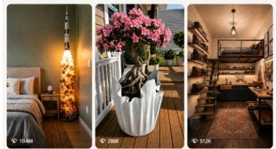

Back to all prompts
DIY TRANSFORMATION
Storyboard & Reference

Download Reference{kind=link}
SEEDANCE 2.5 — 15-SECOND VIRAL DIY TRANSFORMATION ULTRA MASTER PROMPT
USER INPUTS
Starting Object: [OLD / CHEAP / DISCARDED OBJECT]
Additional Materials: [CEMENT / WOOD / METAL / GLUE / ROPE / STONES / FABRIC / LED / ETC.]
Final Creation: [PREMIUM FUNCTIONAL HOME / GARDEN / FURNITURE / DECOR OBJECT]
Signature Texture or Design: [RIBBED / LEAF-VEIN / STONE / WOOD-GRAIN / GEOMETRIC / ORGANIC]
Final Location: [BACKYARD / PATIO / BEDROOM / LIVING ROOM / BALCONY / GARDEN / WORKSHOP]
Functional Payoff: [LIGHT TURNS ON / WATER FLOWS / DRAWER OPENS / TABLE IS USED / PLANT ADDED / ETC.]
Create an ultra-realistic 15-second vertical 9:16 DIY transformation video for Seedance 2.5, designed like a genuine viral social-media craft video accidentally captured by a skilled DIY creator using an iPhone rear camera.
The central concept is an extremely satisfying transformation where an ordinary, cheap, recycled, discarded, or unexpected household object is gradually converted into a beautiful, expensive-looking, fully functional piece of modern home décor, furniture, garden décor, lighting, storage, or household design.
The finished object must feel surprising compared with the starting material.
The viewer's emotional reaction should be:
“Wait… what is he making?” → “Oh, I understand now.” → “No way that came from THAT.”
Do NOT reveal the completed creation in the opening.
The transformation itself is the story.
CORE VISUAL CONCEPT
Begin immediately with the creator already handling [STARTING OBJECT].
The starting object should look ordinary, inexpensive, slightly used, scratched, dusty, worn, recycled, or imperfect enough that viewers instantly recognize it as something mundane.
The creator begins performing an unusual first action involving [ADDITIONAL MATERIALS].
The first action must create immediate visual curiosity because its purpose is not obvious yet.
The video should progressively show the object changing through believable craftsmanship until it becomes:
[FINAL CREATION]
featuring:
[SIGNATURE TEXTURE OR DESIGN]
The transformation must feel ambitious and surprising but physically achievable.
Do NOT use magical transformations.
Do NOT morph one object instantly into another.
Every visible construction step must logically contribute to the next stage.
STRICT 15-SECOND STORY STRUCTURE
0.0–2.0 SEC — SCROLL-STOPPING WTF HOOK
Start directly on the action.
No introduction.
No title card.
No creator speaking to camera.
No finished-product preview.
Show the raw [STARTING OBJECT] prominently in the center of frame.
Hands immediately perform one strange but purposeful action:
placing, cutting, wrapping, coating, attaching, filling, positioning, measuring, gluing, inserting, pouring, or shaping something.
The object should still clearly resemble its original form.
Make the viewer wonder:
“What could this possibly become?”
Camera: medium-close handheld iPhone shot, approximately chest or waist height, slightly overhead when useful.
Allow subtle natural hand movement and micro-shake.
2.0–5.0 SEC — STRUCTURE BEGINS FORMING
Cut naturally to a more advanced but logically connected stage.
The creator adds the main structural material.
Examples depending on concept:
wet cement spreading,
wood pieces being screwed together,
metal mesh being positioned,
adhesive being applied,
rope being wrapped,
rings being attached,
stones being embedded,
foam being shaped,
fabric being stretched,
LED strips being routed,
plaster being smoothed.
Hands, tools and the original object remain clearly visible.
Show tactile material behavior.
Cement must feel thick, heavy and wet.
Glue must stretch naturally.
Wood must show realistic grain.
Dust should behave naturally.
Loose pieces must obey gravity.
Nothing should float.
Nothing should magically snap into place.
5.0–7.5 SEC — MOST SATISFYING TRANSFORMATION MOMENT
Show the strongest tactile craftsmanship moment.
This should be the visual-ASMR centerpiece.
Possible actions:
smooth wet cement with a trowel,
carve repeating grooves,
press leaf veins into plaster,
peel away a mold,
remove masking material,
cut excess edges,
sand a rough surface,
brush debris away,
reveal embedded stones,
shape an organic contour,
remove a temporary support.
Use a close-up or macro-style phone shot without becoming cinematic.
Show authentic imperfections:
tiny scratches,
cement residue,
fingerprints,
uneven edges,
dust,
subtle tool marks,
small droplets,
material crumbs,
natural asymmetry.
This imperfection is essential for realism.
7.5–10.5 SEC — DESIGN / FINISHING STAGE
Now the viewer should understand what is being created.
Reveal approximately 70–85% of the completed form.
Show a fast but believable finishing action:
sanding,
painting,
staining,
polishing,
brushing,
installing hardware,
attaching legs,
mounting fixtures,
adding decorative stone,
installing a bulb,
routing wiring,
sealing the surface,
fitting a faucet,
adding handles.
Maintain identical object dimensions and geometry between shots.
Any marks, textures, holes, legs, hardware or modifications introduced earlier MUST persist in every following shot.
Do not regenerate the object differently.
10.5–12.5 SEC — FUNCTIONAL ACTIVATION
The creation is now physically complete.
Show the creator performing one final practical interaction involving:
[FUNCTIONAL PAYOFF]
Examples:
press the lamp switch and the bulb illuminates;
turn the faucet and real water flows;
place a coffee mug on the finished table;
open the newly built drawer;
place a leafy plant inside the finished planter;
sit briefly on the finished bench;
hang a coat from the completed wall rack;
activate hidden LEDs;
place books on the completed shelf.
This functional test is mandatory.
The object must not merely look beautiful.
The viewer must SEE that it genuinely works.
12.5–15.0 SEC — PREMIUM HERO PAYOFF
Cut to [FINAL LOCATION].
Show the completed [FINAL CREATION] naturally integrated into the environment.
Keep the camera realistic.
Do not suddenly switch to a luxury commercial camera.
It should still look like the same person recorded the reveal on an iPhone.
Use attractive but believable natural lighting.
If outdoors:
natural sunlight,
foliage,
patio stones,
ordinary garden textures,
soft wind movement.
If indoors:
window light,
realistic practical lamps,
normal furniture,
natural shadows,
minor lived-in details.
Show the original handmade imperfections still present in the finished object.
The final result should look premium because of clever design and craftsmanship—not because the generator turned it into CGI.
Finish with approximately 1–1.5 seconds of readable final-result visibility.
CAMERA IDENTITY — LOCK FOR ENTIRE VIDEO
Captured as:
raw iPhone rear-camera footage
not cinema camera footage.
Use:
natural handheld micro-shake,
tiny wrist corrections,
subtle autofocus breathing,
occasional minor exposure adjustment,
realistic rolling handheld motion,
normal smartphone dynamic range,
natural motion blur,
realistic depth of field,
slightly imperfect framing,
credible lens perspective,
natural sharpening,
real-world textures.
Most shots should use approximately the visual equivalent of a normal smartphone 1× camera.
Close-ups may naturally move closer rather than simulate extreme telephoto lenses.
Avoid artificial cinematic movement.
NO drone shot.
NO crane.
NO impossible orbit.
NO FPV motion.
NO huge dolly.
NO dramatic zoom transition.
NO fake rack-focus showcase.
CREATOR CONTINUITY LOCK
Use one consistent DIY creator throughout the working scenes.
The creator is NOT the star.
The object is the star.
Only hands, arms, torso or partial body should generally be visible.
Keep exactly consistent:
skin tone,
hand shape,
finger proportions,
clothing,
sleeves,
pants,
shoes when visible,
workspace.
Recommended clothing:
plain neutral gray / black / beige T-shirt or work shirt,
dark pants,
ordinary workshop clothing.
No logos.
No fashion styling.
No jewelry changing between shots.
Hands must remain anatomically correct.
Exactly five fingers per hand.
Tools must stay correctly held.
WORKSPACE REALISM
The main construction takes place in a believable DIY environment:
garage,
small workshop,
back patio,
driveway,
garden work area,
utility room,
covered outdoor workspace.
The location should contain subtle practical clutter such as:
used bucket,
small offcuts,
dust,
cement residue,
brush,
trowel,
sandpaper,
cordless drill,
measuring tape,
scrap materials.
However, do NOT make the background visually busy.
Attention stays on the project.
Objects in the background must remain reasonably consistent between cuts.
MATERIAL PHYSICS LOCK
All materials must behave according to real-world physics.
Wet cement:
thick, gritty, heavy, slightly glossy when wet, gradually matte when cured.
Wood:
visible natural grain, believable thickness, realistic cut edges.
Metal:
appropriate stiffness, reflections and weight.
Paint:
opaque coating with realistic brush or spray behavior.
Glue:
correct viscosity and tackiness.
Sandpaper:
creates subtle dust and smoothness.
Water:
obeys gravity, splashes naturally, reflects environment realistically.
LED:
produces physically believable local illumination.
Fabric:
folds and compresses naturally.
Rope:
bends and wraps with tension.
No material may behave like liquid plastic CGI unless it is actually a liquid material.
TEMPORAL CONTINUITY
Treat the video as a compressed real DIY build rather than six unrelated AI shots.
Every subsequent stage should inherit the physical state created by the previous stage.
For example:
raw object
→ measured object
→ structural material attached
→ structure shaped
→ surface finished
→ functional hardware installed
→ final working product.
Never:
raw bucket
→ random cement object
→ completely different planter.
Maintain exact project identity across the entire sequence.
Same:
diameter,
height,
shape,
texture pattern,
leg placement,
opening location,
hardware placement,
surface markings,
design language.
EDITING LANGUAGE
Use approximately 6 strong visual beats across 15 seconds.
Cuts should happen primarily when an action finishes or when enough time has logically passed for the next DIY stage.
Use normal hard cuts.
Occasional subtle match cut is acceptable.
Avoid:
AI morph transitions,
energy transitions,
whip transition overload,
flash frames,
zoom explosions,
speed-ramp effects,
floating-object transitions.
The editing should feel like a human creator manually condensed a real DIY build for TikTok / Instagram Reels / YouTube Shorts / Facebook Reels.
AUDIO DESIGN
Prioritize realistic synchronized DIY ASMR.
No narration unless separately requested.
Foreground sounds should correspond exactly to visible actions.
Potential sounds:
rubber thump,
plastic scrape,
cement scoop,
wet cement squish,
metal trowel scrape,
wood tap,
cordless drill burst,
screw tightening,
sandpaper rasp,
stone clicks,
paintbrush strokes,
spray hiss,
mold peel,
dust brushing,
water trickle,
switch click,
electrical connection click,
object placed on floor,
ceramic mug placed on tabletop.
Background:
subtle workshop ambience,
faint birds outdoors,
distant room tone,
gentle environmental noise.
Do not make every sound exaggerated.
ASMR should feel naturally captured by a nearby smartphone microphone.
No loud cinematic impacts.
No Hollywood whooshes.
No epic trailer soundtrack.
VIRAL RETENTION RULES
The opening must withhold the answer.
The viewer should not immediately know what is being made.
Each successive scene must provide slightly more information.
The strongest reveal happens after the midpoint.
The most aesthetically satisfying frame should occur near the ending.
Final functional activation should create a second mini-payoff after the visual transformation.
Structure:
Curiosity → Progress → Recognition → Satisfaction → Functional Surprise → Beauty Shot
AESTHETIC TARGET
Not a polished television DIY show.
Not a luxury commercial.
Not a movie.
Not CGI.
Not hyper-stylized.
It should resemble a highly successful DIY creator who recorded an unusually clever project using a recent iPhone and edited the best moments into a short viral reel.
Target impression:
real person + real object + real tools + clever transformation + satisfying craftsmanship + premium final result.
STRICT NEGATIVE PROMPT
Absolutely avoid:
CGI appearance,
3D-render look,
cartoon materials,
AI glossy surfaces,
unrealistic perfect geometry,
floating objects,
teleporting tools,
instant magical construction,
material morphing,
object morphing,
changing project dimensions,
changing texture between shots,
changing creator identity,
changing clothes,
extra fingers,
missing fingers,
merged hands,
deformed hands,
duplicate tools,
tools passing through hands,
hands passing through objects,
incorrect grip,
impossible tool movement,
rubbery wood,
liquid concrete behaving like water,
weightless materials,
floating dust blobs,
random sparks,
random smoke,
unnecessary fire,
random extra people,
crowds,
construction workers,
text overlays,
subtitles,
logos,
watermarks,
brand names,
TikTok UI,
Instagram UI,
Facebook UI,
animated graphics,
arrows,
reaction emojis,
before-after split screen,
finished-product preview in opening,
dramatic Hollywood lighting,
studio lighting,
cinematic anamorphic lens,
extreme bokeh,
lens flares,
drone shot,
camera orbit,
impossible camera movement,
aggressive zoom,
slow motion,
time-freeze effect,
fake depth blur,
over-sharpening,
oversaturated colors,
beauty-filter appearance,
perfect spotless workshop,
luxury showroom replacing real environment,
incorrect shadows,
multiple suns,
flickering illumination,
inconsistent weather,
inconsistent backgrounds,
object suddenly becoming cleaner without finishing,
unexplained parts appearing,
installed components disappearing,
texture changing,
legs moving position,
wrong scale,
warped straight edges,
textured surfaces becoming smooth between scenes,
final product changing design.
FINAL GENERATION COMMAND
Generate ONE coherent 15-second continuous DIY transformation story using the above specification.
The transformation should feel genuinely handmade, physically believable, highly satisfying and immediately understandable without narration.
Prioritize in this exact order:
1. Project continuity
2. Realistic hands and tools
3. Physically accurate material behavior
4. Strong first-2-second curiosity hook
5. Logical construction progression
6. Satisfying tactile craftsmanship
7. Raw iPhone realism
8. Functional payoff
9. Beautiful final reveal
10. Viral replay value
The finished video must make viewers genuinely question whether the DIY project was recorded in real life rather than generated by AI.